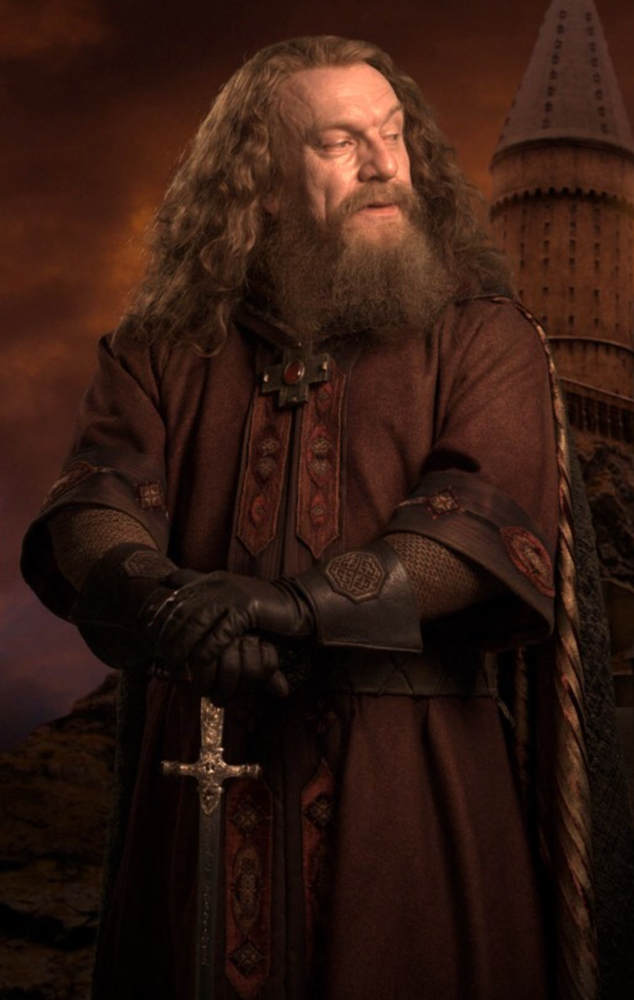
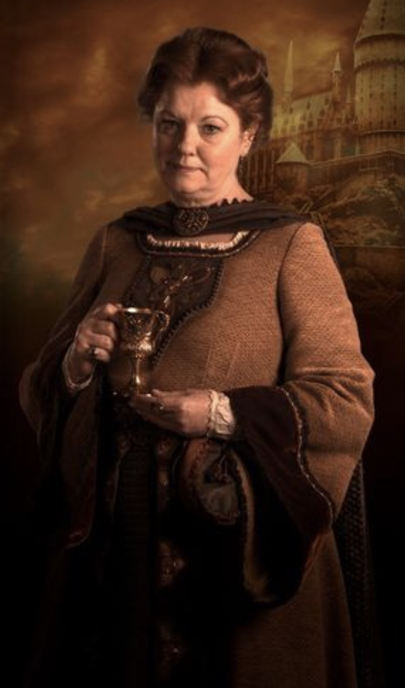
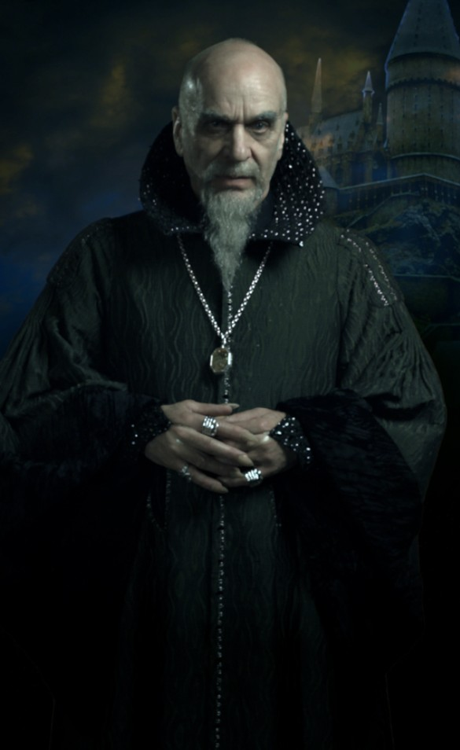

Founders of Hogwarts
Godric Gryffindor,one of the most renowned wizards of his age, was known for his courage, chivalry, and boldness. He hailed from the wild moors and was deeply admired for his strong sense of justice and bravery. Gryffindor believed that anyone with magical ability deserved a place at Hogwarts, regardless of their background or bloodline, which sometimes put him at odds with Salazar Slytherin. His legacy includes the Sorting Hat, which he enchanted with his fellow founders to sort students into their houses. Gryffindor House embodies his values of bravery, nerve, and daring. His famed sword, the Sword of Gryffindor, appears to any Gryffindor in need and plays a critical role in the series, particularly in the destruction of Voldemort’s Horcruxes.
Helga Hufflepuff
Helga Hufflepuff was known for her kind, inclusive, and fair nature. Coming from the broad valleys, she was perhaps the most welcoming of the founders, valuing loyalty, hard work, and dedication above all else. She was willing to teach and accept students of all magical abilities and backgrounds, making her the embodiment of fairness and equality. Helga was also known for her culinary magic and was instrumental in creating the Hogwarts feast traditions. Hufflepuff House reflects her values of hard work, patience, and loyalty. Her cup, Hufflepuff’s Cup, became one of Voldemort’s Horcruxes.
Rowena Ravenclaw
Rowena Ravenclaw was celebrated for her brilliance, wisdom, and creativity. She hailed from a mountainous region and valued intelligence and the pursuit of knowledge above all. Her emphasis on wit and intellect is reflected in the ethos of Ravenclaw House, which prizes cleverness, originality, and academic excellence. Rowena’s legacy is tied to her diadem, the Lost Diadem of Ravenclaw, which was said to enhance the wisdom of its wearer. Tragically, her diadem was stolen by her daughter, Helena, who fled and eventually became the Grey Lady, Ravenclaw House’s ghost. The diadem was later turned into a Horcrux by Voldemort and destroyed by Harry and his friends during the Battle of Hogwarts.

Salazar Slytherin
Salazar Slytherin was a powerful and ambitious wizard who valued cunning, resourcefulness, and determination. Coming from the fens, he was known for his strong belief in the superiority of pure-blood wizards. Slytherin’s emphasis on blood purity led to conflict with the other founders, especially Godric Gryffindor. Slytherin secretly created the Chamber of Secrets and left a dangerous creature, the Basilisk, within it to purge Hogwarts of Muggle-born students if the school’s leadership ever contradicted his ideals. His legacy is deeply tied to Slytherin House, which values ambition, leadership, and cunning. Many Dark Wizards, including Voldemort, emerged from his house. His locket, Slytherin’s Locket, was later turned into a Horcrux.
Houses
- Gryffindor: Bravery, courage, determination, and chivalry.
- Hufflepuff:Hard work, patience, loyalty, and fairness.
- Ravenclaw :Intelligence, creativity, wit, and a love of learning.
- Slytherin :Ambition, cunning, leadership, and resourcefulness.